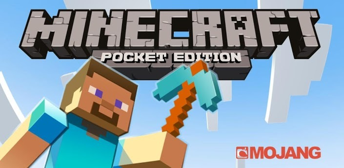

圖片來源: https://tw.meetgee.com/MiniSite/Topic/View.aspx?ID=2053778&GameID=2007666
介紹(本人):
這是一款看起來非常無聊的遊戲, 幾乎我身邊的人都這麼認為, 但請注意, 真的只是看起來無聊而已
但是只要動起你的雙手, 開始行走雙腳, 也許你就會發現這個遊戲的樂趣之處
剛進入這個世界, 一定會感覺到不知所措
也許是在森林裡, 也許是沙漠, 也有可能是草原, 甚至可能是在一個孤島上面
發現身邊的資源, 然後開始享受徒手挖木的快感(?)
躲避怪物的攻擊, 親手製造身活所需, 在天然礦坑裡面尋找鑽石的蹤跡
在地獄裡面與魔王對決, 在終界裡面當個屠龍的傳說
創世神不只是一個蓋房子的遊戲, 是一個冒險的遊戲
可以根據個人喜好調整難度, 一個死亡之後一切消失殆盡的難度
或者用紅石蓋出一部電腦, 弄出一台印表機
創世神的自由度比一般人想像的高
如果這些還不能滿足你, 你可以裝模組!
體驗核彈的爆炸, 使用電子槍破壞地形
使用立體機動裝置攻擊巨人, 使用魔里沙的香爐進行魔法攻擊
創世神是一個超乎想像的遊戲, 只要嘗試
就一定可以體會這個遊戲的樂趣